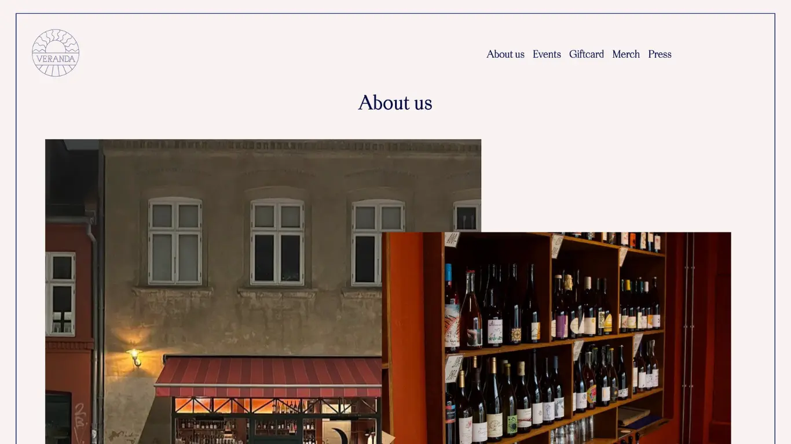

Følg med i min process over redesignet nedenfor


Vi ville gerne lave noget for en virksomhed hvor vi kunne sætte os ind i deres branding osv. Derfor en vin bar eller lign og så i lokalområdet (Nørrebro). Vi kiggede rundt på Instagram og fandt flere forskellige virksomheder som vi kontaktede. Veranda Vin som flere af os i gruppen kender til svarede at de var meget interesseret og selv havde overvejet at få den redesignet.
Wireframes hi-fi og lo-fi
Her kan i se det nuværende site https://www.verandavin.dk for sammenligning.


Den første kode jeg gerne vil fremhæve er en fade-in effekt på nogle af billederne blandt andet på siden “events”. Her er der gjort brug af eventlistener. Når man scroller ned på siden aktiveres en pop op funktion på den ene billede.
Den anden kode jeg vil fremhæve er effekten på månen på forsiden. Effekten har vi fundet på Animista.com og tilpasset til denne kode og sat den ind i Java Script.
Her ses de forskellige tests vi har lavet på det nuværende site og vores redesign. Alt i alt har vi skabt et site som er meget mere brugervenligt og man kan bruge site til noget relevant. Derudover er det også designmæssigt mere harmonistisk. Desuden vil Veranda Vin gerne bruge designet og have os til at kode hjemmesiden for dem her når vi er færdige med vores eksamener.


Til interviewet stillede vi følgende spørgsmål:
Videoen er et interview med indehaveren af Veranda, som fortæller om barens koncept og mål i forhold til bæredygtigt indkøb af naturvin. Vi har valgt at filme med vinbaren som baggrund for at fange den hyggelige stemning på Veranda, samt at gøre det tydeligt at det er en vinbar videoen handler om. Dette kommer også til udtryk i vores storyboard.
Under selve optagelsen brugte vi en Iphone 13 med en DJI Mimo Pocket attachment som vores primære kamera. For at sikre optimal lydkvalitet anvendte vi en knapmikrofon.
Vi stødte på nogle udfordringer med lydsporet fra knapmikrofonen under redigeringsprocessen, og endte derfor med at anvende det oprindelige lydspor i den endelige video. Vi har forsøgt at reducere baggrundsstøj og forbedre lydkvaliteten ved hjælp af Premiere Pro's automatic repair og clip gain funktioner.